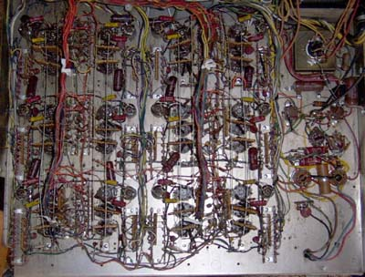
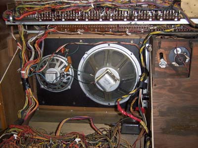

|
This Lowrey LSO Holiday appeared in ebay listings early 2002 for a massive $20, with the stipulation it be picked up by the purchaser. The seller wasn't that far from where I live, so I bid. No one else did, so I came home with my prize. It wasn't until after I bid that it occurred to me that this organ may use tubes, and getting it home, I was delighted to find it did. It appears to have been manufactured around 1958, and was a top of the line model. My father told me their church purchased a similar, if not identical, model back then, and it cost the equivalent of 50% of what a house cost at the time. Going on how it has been constructed, this does not surprise me, because it is quite versatile for an organ made entirely without the miniaturization and savings possible with transistors or ICs. I had intended to buy it just to add to my parts collection, but firing it up, I found it had an exquisite tone, far superior to most of the transistor and IC organs I have tried from the 70s. (I was so unimpressed with a Thomas I bought for the same price, that I had demolished it within two days to give me my space back! A Kawai didn't even last an hour!) It still needs some work to get a few notes working correctly, but after all these years, it is still in perfect tune. The greatest problem with it was corrosion of the leads of the numerous neon lamps it uses in its sustain circuits. Many of these neons had detached themselves. As it stands, it has multi-timbral qualities when played, and is quite pleasant. Unlike a lot of earlier tube organs, this one uses square wave generating oscillators, making its tone generation more like the solid state ones that followed, using filtering rather than additive syntheses to form the various tones.
EpilogeUnfortunately after investing several hours in trying to repair this organ, it became obvious that repair was out of the question. There were too many leaky capacitors that needed replacement, most of which were not physically accessible without undoing several hundred keyboard wires. While I may be crazy, I'm not that crazy. The console was adapted to be the base for several of my synthesizer cabinets. It is currently fitted with a 72 note keyboard, which as of yet has not been fully wired.
The back of the organ, showing the banks of tubes and the leslie speaker
 The wiring behind the tubes. This is where a lot of neon lamps had parted company with their wires.

Article, art & design copyright 1999 by Ken Stone
|